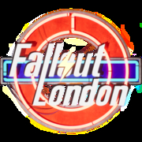

|  | |
| Tiempo de juego | No Jugado |
| Última actividad | Nunca |
| Añadido | 11/6/2024 14:41:31 |
| Modificado | 11/8/2024 17:37:31 |
| Estado de finalización | No Jugado |
| Librería | Playnite |
| Fuente | 6TB STORE |
| Plataforma | PC (Windows) |
| Fecha de lanzamiento | 7/25/2024 |
| Puntuación de la Comunidad | |
| Puntuación de la Crítica | |
| Puntuación de usuario | |
| Género | Action role-playing |
| Desarrollador | Team FOLON |
| Editor | |
| Característica | Single-player |
| Enlaces | Wikipedia Fallout: London official website IMDb |
| Tag | [Game Engine] Creation Engine [People] artist: Daniel Krutak [People] artist: Emily Kemp [People] artist: Jean Martel [People] artist: Jordan Albon [People] artist: Joseph Wills [People] artist: Matthew Espinosa [People] artist: Matthew Gibbs [People] composer: Daniel Morrison Neil [People] director: Dean Carter [People] programmer: Callum J. Quick [People] programmer: Vladislav Butyrin [People] writer: Benjamin McCoy [People] writer: Callum J. Quick |
Fallout: London is a 2024 total conversion mod developed by Team FOLON. It is based off Fallout 4, the 2015 action role-playing game by Bethesda Softworks. The mod takes place in a post-apocalyptic rendition of London, and is notable for its departure from the series' typical United States setting. Reviewers praised the scope and detail of Fallout: London for a free project, praising its use of British locations, themes, and cultural references in the Fallout setting, whilst critiquing the mod's bugs and performance issues upon release.
Fallout: London is an open world action role-playing game. At its core the game plays similarly to Fallout 4, while borrowing other elements from prior games and including entirely new elements. Returning features from Fallout 4 include a camera that can switch between a first-person and third-person perspective, its combat gameplay, V.A.T.S., and settlement building. The expanded dialogue system from all games prior to Fallout 4 returns, which gives the player the ability to view every possible dialogue option in its entirety as opposed to Fallout 4's abbreviated responses. While in conversation dialogues the player character is silent, similar to older titles, but the camera interactions during the dialogue behave similarly to Fallout 4.
The player character uses the ATTA-Boy, a reverse engineered Pip-Boy created by Angel. It functions similar to the Pip-Boy in that it functions as the player character's digital assistant. Quests, inventory, the world and local maps and more are managed through it. Power armour has been removed, as according to Fallout's canon it was an American invention. Weapons and armor feature intricate crafting and customization operations, which allow the player to tune their weapons and armor to their personal tastes.
At the start of the game players choose their character's gender, physical characteristics, and choose from several attributes to initially assign experience points to. These range from strength to luck, and each time the character levels up they can choose to further upgrade these attributes, or upgrade other perks, such as the ability to pick locks easier. As the player progresses they will encounter companions who can accompany the player character in their adventures. Fallout: London features a canine companion, as has been tradition in the series, with the exception of Fallout 76. In keeping with British themes within the mod, the dog is a British Bulldog named Churchill instead of the usual Dogmeat character.
Fallout: London is set in 2237, placing it between the events of Fallout and Fallout 2. The story begins after a lab break-in, where the player must escape to the surface. There are a number of factions vying for control of London during the story. The Gentry are London's rulers, based out of Westminster, descended from the pre-war government of the United Kingdom. The Tommies are a militia backed by the Gentry that have a self-imposed value to protect London. The 5th Column is a pseudo-fascistic paramilitary organization who wishes to fight against the Gentry, creating an authoritarian state with their leader, Eve Varney as supreme leader. The Camelot Movement is a medieval-inspired organization fighting to free London from Gentry rule to replace it with a republic. Two rival gangs, the Isle of Dogs Syndicate and the Vagabonds, fight for territory. Lastly, Angel is a secretive organization capable of creating humanoid pale clones. The player's interactions with these factions determines the flow of the game and ultimately, the outcome. The player is given a choice between siding with Angel, the 5th Column or Camelot.
In addition to interactions with these factions, the player will interact with other characters in the game, who provide quests that may or may not affect the final outcome. Players also will interact with a new species known as Thamesfolk, who appear green and somewhat fish-like, having evolved from the extreme radiation found in the River Thames. These interactions will take players to famous locations in London, including Buckingham Palace, 10 Downing Street, the London Eye, and Westminster Abbey.
Fallout: London had been in development since 2019. It has a main map around the same size as Fallout 4, with its five smaller hub areas combining to be roughly the same size as the Far Harbor DLC. In a 2024 interview with the BBC News Team FOLON's Dean Carter discussed the development of the mod and its origins. He stated that while it started small, COVID-19 affected the world and, according to Carter, "we suddenly all found ourselves everyone on the team found ourselves basically locked inside for two years with nothing to do so we decided let's make a game." Carter noted that the mod only had roughly 20 testers compared to 150 for Bethesda's Fallout 4, and that such a small sample size could not have covered the wide range of computers and situations where bugs could occur. He stated that the team is hard at work on continuing to patch the game. Regarding support from Bethesda, Carter stated that there was "zero correspondence" from the company, but that Team FOLON did not expect any. The team have no plans for further Fallout mods after London, but instead hope to create an entirely new IP as an indie game studio. The team consisted of almost 100 modders and over 100 voice actors. The Russo-Ukrainian War took its toll on the team, with multiple members needing to suddenly abandon their positions. Horses and bicycles were planned, but ultimately cut due to bugs and other issues.
The mod features full voice acting provided primarily by volunteers, but also features Doctor Who actors Colin Baker (the Sixth Doctor) and Sylvester McCoy (the Seventh Doctor). Former UK Speaker of the House of Commons John Bercow also appears as a robotic Speaker of the House. Voice actor Neil Newbon, who has provided the voice for Astarion from Baldur's Gate 3 and various voices in Resident Evil games, voices Barry the Boat. Anna Demetriou, known for Sophia from a A Plague Tale: Requiem, also provides voices. Four hours of original music were created for the mod.
An 18-minute gameplay trailer for the mod was released on May 18, 2022. The mod was initially scheduled to be released in 2023, and then scheduled to be released April 23, 2024. The game's release date was then pushed back a second time due to Bethesda's next gen update to Fallout 4. It was released on July 25, 2024. Team FOLON partnered with GOG.com who distributed the mod. The mod could not be hosted on typical mod sites due to its sheer size. Within 24 hours it was reported that it had been downloaded over 500,000 times, making it the fastest redeemed title ever on the platform. A hotfix patch was released on August 9, 2024 which addressed the most pressing issues with the mod. The team continue work on a larger update. The next-gen update for Fallout 4 on April 25, 2024 caused an unexpected rescheduling of the release date while the team assessed compatibility with the mod. The Fallout 4 update received mixed reception. Ultimately the team opted to keep the mod on the pre-next-gen version of the game. For users of the Steam version this required reverting the next-gen update, whilst GOG.com players had not yet received the update, and could install Fallout: London without need to downgrade.
Upon release, Fallout: London received praise for its setting and worldbuilding, although criticism was directed towards the mod's bugs and technical issues present upon release. Many reviewers applauded the scope and detail of the game for a free modification, with Joshua Wolens of PC Gamer describing the project as an "impressive modding achievement", and Lewis White of PCGamesN remarking that the mod was "sprawling" and "deserved to be celebrated as a monument to fan dedication".
Critics praised the mod's world, characters, and interpretation of Fallout within an English setting. Claus Larsen of Gamereactor considered its setting to be detailed and authentic, highlighting the game's "English charm and eccentricity" to be captured in its voice acting, cultural references, factions and landmarks. Ravi Sinha of GamingBolt commended the mod's "attention to detail" and "well-realized environments", describing the "darker mood" of the setting as immersive and evocative of "a retrofuturistic London that's gone to hell and back". White highlighted the mod's "anglicisation of key gameplay features, including items, weapons, easter eggs and its "meticulously thought-out" factions. Wolens praised the "fun, thoroughly British pastiches" of its setting and characters.
However, Fallout: London received criticism for the bugs and technical issues upon its release. Many critics noted the game experienced frequent crashes, with Wolens describing the mod was "barely playable" and Sinha concurring the poor technical performance was a "hurdle" to enjoying the game. Larsen cited additional issues, including problems with quest design and inconsistencies in the voice recordings of characters. Nic Reuben of Rock Paper Shotgun similarly expressed frustration with the mod, remarking that the "extra mods and settings" required to make Fallout: London stable exceeded his personal tolerance and recommended waiting for a patch.